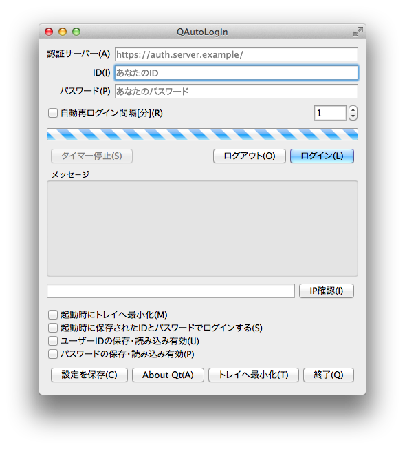

WEB認証に自動ログイン
校内LANなどのWEB認証システムにWebブラウザを使わず自動的にログインすることができます．
一部のWebブラウザはWEB認証との相性に問題があり，認証がうまくいかない場合があります． QAutoLoginはWEB認証のサーバーと直接通信するため相性問題が発生しにくくなっています．
また，定期的に強制的にログアウトさせられる認証システムの場合， 巨大なファイルのダウンロードや特定のアプリケーションの通信に問題が発生する場合があります． QAutoLoginの自動定期再ログイン機能を強制ログアウト時間より短く設定することで，これらの問題を回避することができます．
